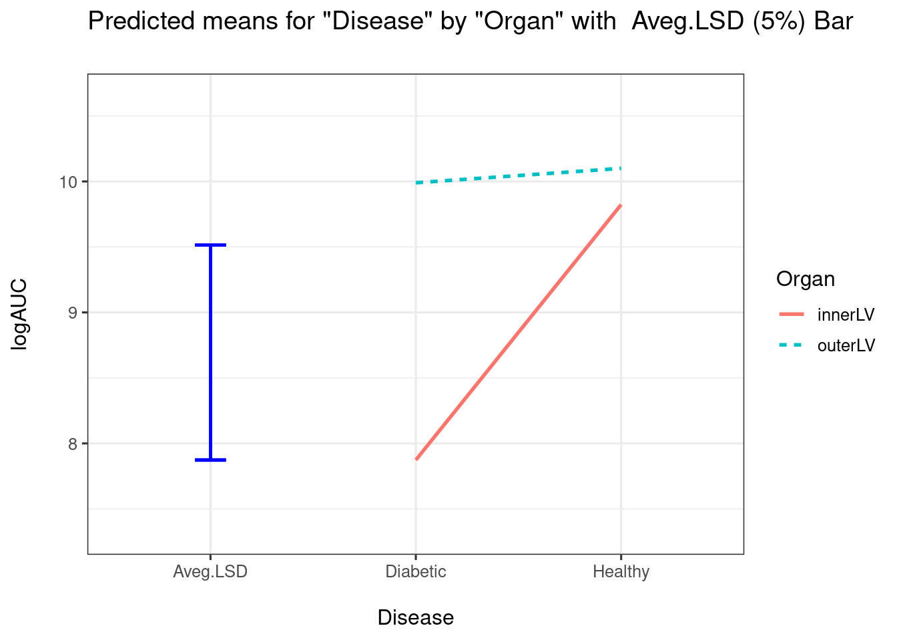

Multidimensional Scaling (MDS)
Multidimensional scaling (MDS) is an extended family of techniques that try to reproduce the relative positions of a set of points in a reduced space given, not the points themselves, but only a matrix with interpoint distances ( dissimilarities ) - see section 3 . This sounds easier than it is. These distances might be measured with error, or even be non-Euclidean. With PCA there would be at least one Euclidean configuration of points that would exactly reproduce the dissimilarity matrix - the original data matrix. Indeed there would be an infinity, any rotation or reflection of the original data would leave the interpoint distances unchanged. This configuration might lie in a high dimension hyperspace but at least it would be exact. The problem of approximating it in fewer dimensions is not too difficult. However, if the matrix of dissimilarities is not Euclidean, then there is no guarantee that there is any exact configuration, let alone an adequate approximation. It is this kind of problem the scaling techniques are designed to solve. The origins of many of these techniques are in psychology (psychometrics to be precise) so the extensive literature is littered with terms like stimulus, subject, attribute and preference, which makes reading it rather stressful.
Principal Coordinates.
Principal coordinates (PCO) is closely related to PC. It finds a configuration of points that optimally reproduces the distance matrix in a Euclidean space of few dimensions. Though it works best on a Euclidean dissimilarity matrix, it will nearly always produce useful results from non- Euclidean ones.
Intuitive explanation
Assume for the moment that the dissimilarity matrix is Euclidean. We can therefore try to imagine a cloud of points hanging in a space of unknown dimensionality. These points have no coordinates since as yet there are no axes (only distances were given). The problem is to impose a set of axes on the space and then locate the points on them. By a cunning transformation of the dissimilarity matrix, it can be made equivalent to a matrix YY ‘, a cross-product matrix of a set of coordinates Y . An eigenanalysis of this cross-product matrix (like PCA and CA) will give a diagonal matrix of eigenvalues Λ and a matrix of eigenvectors V , so that YY’ = V Λ V’ (see chapter 1). The coordinates are given by Y = V Λ 1/2 , the elements of the scaled eigenvectors (the Λ 1/2 rescales the eigenvectors to have a sum of squared coefficients equal to the eigenvalue). Like PCA the eigenvectors identify orthogonal axes that run down the major axes of the cloud of data points; though they will not be the old axes rotated, there are no old axes. As in PCA the size of the eigenvalues will give the variation of the data points along the associated axis (eigenvector). It is therefore comparatively easy to select a reduced space to display the relationships among the data points. If the original distance matrix was Pythagorean then the results will be identical to a PCA on thedata matrix from which the distances were calculated. If the dissimilarity matrix is non-Euclidean, then there may be problems with the interpretation of the eigenvalues and in extreme cases the plots themselves, this is discussed in section 5.0.
Relationships with PCA.
The final stage of PCO, an eigenanalysis of a cross products matrix YY’ , seems very reminiscent of PCA - an eigenanalysis of a crossproducts matrix Y’Y . If the original dissimilarity matrix actually contains Euclidean (Pythagorean) distances, then PCA and PCO are doing exactly the same thing, reproducing a cloud of points in fewer dimensions on orthogonal axes while optimally preserving their relative positions. It is reassuring that in such a case, a PCA on the covariance matrix will is identical to PCO on the dissimilarity matrix. The major conceptual difference between the two 63techniques is that PCA uses the eigenvectors to project the original data points (vectors) into the reduced space. In PCO the scaled eigenvectors are the vectors of observation scores in reduced space; but their positions in the reduced space and the positions of the corresponding axes will be identical.
Metric Scaling.
Metric scaling tries to produce a set of coordinates (a configuration of points) in a reduced number of dimensions whose matrix of interpoint Euclidean distances approximates the original dissimilarity matrix as closely as possible. The eigenanalysis technique Principal Coordinates (PCO) does this directly. PCO is a metric scaling technique (it is sometimes called classical or Torgerson scaling ). However, the term metric scaling is more commonly applied when computer intensive iterative algorithms are used to do the job rather than eigenanalysis. The results will seldom be very different from doing a PCO on the same dissimilarity matrix.
Intuitive explanation
The simplest approach to metric scaling is by repeated approximation, and is always done on a computer. The computer can be imagined as guessing an initial configuration in a high dimension space (less than p -1). It then calculates the distance matrix for these initial points. The elements of this matrix are then regressed against the elements of the given dissimilarity matrix. If by some extraordinary stroke of luck (or fudging) the fit is extremely good then this configuration will do. However, it is far, far, more likely that the fit will not be adequate. The computer then shifts each point in the configuration slightly so that its interpoint distances will fit the given dissimilarity matrix better, calculates the distances, measures the fit and calculates the improvement. If there has been little or no improvement, or the fit is adequate, then a solution has been found and the process stops. If not, then it goes through more iterations till it finds the best fitting set of coordinates (or gives up in disgust). This process is repeated for spaces of fewer dimensions, and the goodness of fit plotted against the number of dimensions (like a scree graph - section 5.3). The appropriate number of dimensions for the reduced space is chosen, and the corresponding configuration plotted and (hopefully) interpreted. Notice it does not calculate one high dimensional solution and extract all lower dimensional solutions from it as PCA or PCO does; the configuration for each reduced space is calculated anew each time. In fact, if the dissimilarities are exactly Euclidean, then a p -1 dimension solution, if subjected to a PCA, will give similar lower dimensional configurations to separate scalings for each solution. In other words a metric scaling on a Euclidean distance matrix will give the same results as a PCA.
Non-metric scaling.
Under certain circumstances trying to preserve the actual dissimilarities might be too restrictive or even pointless. For example if there is large error in the dissimilarity estimates, if the dissimilarities or the data they were based on were ranks (ordinal), then the magnitude of the distances are too crude to be worth preserving. A method that preserved only the rank order of the dissimilarities would be more appropriate. The algorithm to do this is virtually the same as the one given above for metric scaling.. The sole difference is that the linear regression that fitted the estimated distances for the solution to the dissimilarities is now replaced with an order preserving regression - Kruskal’s least squares monotonic transformation (Kruskal 1964), sometimes known as optimal scaling.
Which to use: metric or non-metric?
Both metric and non-metric methods have their strengths. Non-metric methods can handle ordinal data or other lower quality dissimilarities, and are robust to outliers. On the other hand they are more prone to local minima and degenerate solutions. As Gower (1987) points out: when the number of sampling units is large, preserving the rank order is usually essentially the same as preserving distances; in which case it doesn’t much matter which is used. A metric scaling will always have a higher stress than the corresponding global non-metric solution, but will often be more accurate. Sometimes, with non-Euclidean distances, the relationship between the fitted Euclidean distances and the dissimilarities is non-linear. In which case a linear metric scaling may 73not be adequate and a non-metric method will usually be appropriate. Such a situation can be recognised from the shape of the scatter diagram of the fitted distances against the dissimilarities.
Examples in R
Consider data which are not represented as points in a feature space:
- Where we are only provided with (dis)similarity matrices between objects (e.g., chemical compounds, images, trees, or other complex objects)
- Where there are no obvious coordinates in (continuous) n-dimensional space .
Distances (in km) between North Island cities
File north_island_distances.csv can be found on CANVAS
## New names:
## * `` -> ...1## Rows: 11 Columns: 12## ── Column specification ────────────────────────────────────────────────────────
## Delimiter: ","
## chr (1): ...1
## dbl (11): Auckland, Gisborne, Hamilton, Hastings, Napier, Rotorua, Tauranga,...##
## ℹ Use `spec()` to retrieve the full column specification for this data.
## ℹ Specify the column types or set `show_col_types = FALSE` to quiet this message.library(pheatmap)
pheatmap(ni, cluster_rows = TRUE,
treeheight_row = 2, treeheight_col = 2,
fontsize_row = 12, fontsize_col = 12,
cellwidth = 26, cellheight = 26)
## $points
## [,1] [,2]
## [1,] 259.23245 67.43013
## [2,] -107.54173 -285.70950
## [3,] 129.07943 42.71295
## [4,] -173.12950 -25.15974
## [5,] -150.83765 -34.70680
## [6,] 37.39858 -18.39760
## [7,] 118.78535 -85.88683
## [8,] -192.73988 181.50600
## [9,] -385.83172 167.76477
## [10,] 49.93256 -140.17112
## [11,] 415.65212 130.61774
##
## $eig
## [1] 5.249373e+05 1.953521e+05 4.217767e+04 1.872276e+04 1.222717e+03
## [6] 2.910383e-11 -1.399691e+02 -4.733140e+02 -1.103819e+04 -1.883151e+04
## [11] -2.462990e+04
##
## $x
## NULL
##
## $ac
## [1] 0
##
## $GOF
## [1] 0.8600209 0.9206005Eckmans colour perception (1954)
Data may from objects for which we have similarities but no underlying (geometric) space. Here the goal is to understand the underlying dimensionality of colour perception.
- Similarities for 14 colours, with wavelengths from 434 to 674nm based on rating by 31 subjects
- Each pair of colours was rated on a 5-point scale:
- 0 = no similarity up to 4 = identical.
- After averaging over 31 raters the similarities were divided by 4 such that they are within the unit interval.
- Each pair of colours was rated on a 5-point scale:
Data available on CANVAS
## Rows: 14 Columns: 14## ── Column specification ────────────────────────────────────────────────────────
## Delimiter: ","
## dbl (14): w4, 34.w4, 45.w4, 65.w4, 72.w4, 90.w5, 04.w5, 37.w5, 55.w5, 84.w60...##
## ℹ Use `spec()` to retrieve the full column specification for this data.
## ℹ Specify the column types or set `show_col_types = FALSE` to quiet this message.## w4 34.w4 45.w4 65.w4 72.w4
## 1 0.00 0.14 0.58 0.58 0.82
## 2 0.14 0.00 0.50 0.56 0.78
## 3 0.58 0.50 0.00 0.19 0.53
## 4 0.58 0.56 0.19 0.00 0.46
## 5 0.82 0.78 0.53 0.46 0.00Distances (in km) between 21 cities in Europe
library(ggfortify)
## Plotting Multidimensional Scaling (for interest)
## stats::cmdscale performs Classical MDS
data("eurodist") ## road distances (in km) between 21 cities in Europe.
autoplot(eurodist)
## Plotting Classical (Metric) Multidimensional Scaling
autoplot(cmdscale(eurodist, eig = TRUE))
autoplot(cmdscale(eurodist, eig = TRUE), label = TRUE, shape = FALSE,
label.size = 3)
## Plotting Non-metric Multidimensional Scaling
## MASS::isoMDS and MASS::sammon perform Non-metric MDS
library(MASS)
autoplot(sammon(eurodist))
autoplot(sammon(eurodist), shape = FALSE, label = TRUE,label.size = 3)
## Have a go at interpreting these plots based on the geography of the cities :-)